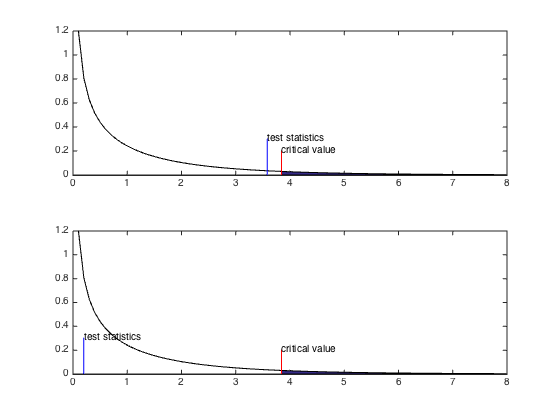
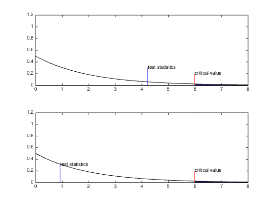
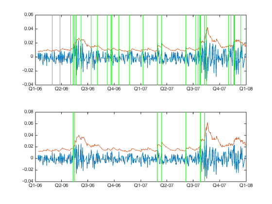

Bactesting Value-At-Risk
Contents
Import the data
The loss \(X_t\) is defined as: \[ X_t = - ( \log P_t - \log P_{t-1} ). \] Here, daily.xlsx contains log return of FTSE 100 index.
% FTSE100 log return raw = xlsread('daily.xlsx'); Dates = num2str(raw(:,1)); FTSE100Losses = -raw(:,2); clearvars raw; DateNums = datenum(Dates,'yyyymmdd'); DateStrings = datestr(DateNums); T = length(FTSE100Losses); TE = T - 500; fprintf('Estimation window start=%s, stop=%s\n',... datestr(DateNums(1)),datestr(DateNums(TE))); fprintf('Testing window start=%s, stop=%s\n',... datestr(DateNums(TE+1)),datestr(DateNums(T))); % Let show what the data looks like. plot(DateNums,FTSE100Losses); set(gca,'XMinorTick','on'); datetick();
Estimation window start=11-Jan-1999, stop=09-Jan-2006 Testing window start=10-Jan-2006, stop=31-Dec-2007

In this report, I will evaluate performance of a VaR model over a two-year testing window starting from January 10, 2006 to December 31, 2007. Initial estimate of VaR will use observations on the estimation window, which dating from January, 2006 to January, 2009. This amounts to seven years of lookback data. Altogether, our total sample size is nine years long.
Collecting VaR and Hit Sequence
The loss dynamics are modeled by constant mean GARCH(1,1) with the student's t innovation :\[ \begin{align} X_t &= \mu + \epsilon_t, \\ \epsilon_t &= \sigma_t Z_t, Z_t \sim \text{standard } t_v, \\ \sigma_t^2 &= a_0 + a_1 \epsilon^2_{t-1} + b_1 \sigma^2_{t-1}. \end{align} \]
On every single day \(t\), GARCH's parameter is estmated from a size-\(\text{T}_E\) window of historical losses up to day \(t\). Day \(t+1\) volatility and ex-ante VaR is calculated as in the below figure.

Ex-post \(X_{t+1}\) is compared with VaR obtained above. Hit sequence is an indicator which equals to one only if the loss violates the forecast VaR. \[ I_{t+1}= \begin{cases} 1, & \text{if}\ X_{t+1} \gt \text{VaR}_{\alpha,t+1}\\ 0, & \text{if}\ X_{t+1} \leq \text{VaR}_{\alpha,t+1} \end{cases} \]
Mdl = garch('Offset',NaN,'GARCH',NaN,'ARCH',NaN, 'Distribution','t'); VaR99 = zeros(T-TE,1); VaR95 = zeros(T-TE,1); I99 = zeros(T-TE,1); I95 = zeros(T-TE,1); for t = TE:T-1 % Garch model estimation on window X = FTSE100Losses(t-TE+1:t); EstMdl = estimate(Mdl,X,'Display','off'); mu = EstMdl.Offset; a0 = EstMdl.Constant; a1 = EstMdl.ARCH{1}; b1 = EstMdl.GARCH{1}; nu = EstMdl.Distribution.DoF; Sig2 = infer(EstMdl, X); % 1-step sig2_t = Sig2(end); ep2_t = (X(end) - mu)^2; sig2_tplus1 = a0 + a1 * ep2_t + b1 * sig2_t; sig_tplus1 = sqrt(sig2_tplus1); % VaR scale = sqrt((nu-2)/nu); vaR99 = mu + sig_tplus1 * scale * tinv(0.99, nu); vaR95 = mu + sig_tplus1 * scale * tinv(0.95, nu); % Output VaR99(t-TE+1) = vaR99; VaR95(t-TE+1) = vaR95; if FTSE100Losses(t+1) > vaR99 I99(t-TE+1) = 1; end if FTSE100Losses(t+1) > vaR95 I95(t-TE+1) = 1; end end
Test unconditional coverage
We test if the fraction of VaR violations is equal to \(p = 1 -\alpha \), i.e., we test \[ H_0 : \mathbb{P}(I_{t+1}=1) = p \text{ against } H_A : \mathbb{P}(I_{t+1}=1) \neq p, \] keeping in mind the assumption \(I_{t+1} | \mathcal{F}_{t} \stackrel{iid}{\sim} \operatorname{Bern} \left({p}\right)\).
The test statistics we are going to use will be the likelihood ratio. The likelihood function for Bernoulli distribution in this particular case is : \[ L(\pi| I_{T_{E+1}}, \dots, I_T) = (1-\pi)^{T_0}\pi^{T_1}, \] where \(T_0\) and \(T_1\) are the number of 0s and 1s in the testing window. Maximizing the likelihood w.r.t. \(\pi\) yields \(\hat{\pi} = T_1/T\). Under the null hypothesis : \[ LR_{uc} = -2 \log \left[ L(p| I_{T_{E+1}}, \dots, I_T) / L(\hat{\pi}| I_{T_{E+1}}, \dots, I_T) \right] \stackrel{asym}{\sim} \chi^2(1). \]
function lr=uctest(alpha, I) p = 1-alpha; T = length(I); T1 = sum(I); T0 = T - T1; p_est = T1/T; lr= -2 * log(likelihood(p, T0, T1) / likelihood(p_est, T0, T1)); end function lik=likelihood(pi, T0, T1) lik = (1-pi)^T0*pi^T1; end
disp(' '); disp('================ VaR95 ================') subplot(2,1,1); LR_uc95 = uctest(0.95,I95); modelfit(LR_uc95, 1, 0.95); disp('================ VaR99 ================') subplot(2,1,2); LR_uc99 = uctest(0.99,I99); modelfit(LR_uc99, 1, 0.95);
================ VaR95 ================
Chi-square with 1-dof :
Alpha=0.950, Critical Value=3.841
LR=0.642, P-Value=0.423
Accept null hypothesis
================ VaR99 ================
Chi-square with 1-dof :
Alpha=0.950, Critical Value=3.841
LR=0.719, P-Value=0.397
Accept null hypothesis

Test of independence
This is a test of no violation clusters (no dependence in VaR violation).
We model depedence in of \(I_{t+1} | \mathcal{F}_{t} \) using markov chain with transition matrix :
\[
\Pi = \begin{bmatrix}
1-\pi_{01} & \pi_{01} \\
1-\pi_{11} & \pi_{11}
\end{bmatrix},
\] where \( \pi{11} = \mathbb{P}(I_{t+1}=1|I_t=1) \) and \( \pi{01} = \mathbb{P}(I_{t+1}=1|I_t=0) \).
The likelihood function in this particular case is :
\[
L(\Pi| I_{T_{E+2}}, \dots, I_T) = (1-\pi_{01})^{T_{00}}\pi_{01}^{T_{01}}(1-\pi_{11})^{T_{10}}\pi_{11}^{T_{11}},
\] where \(T_{ij}\) is the number of observaions j following an i.
Maximizing the likelihood w.r.t. \(\pi\) yields
\[
\hat{\Pi} = \begin{bmatrix}
1-\hat{\pi}_{01} & \hat{\pi}_{01} \\
1-\hat{\pi}_{11} & \hat{\pi}_{11}
\end{bmatrix},
\] where
\[ \hat{\pi}_{01} = \frac{T_{01}}{T_{00}+T_{01}}, \hat{\pi}_{11} = \frac{T_{11}}{T_{10}+T_{11}}.\]
Under the null hypothesis of independence, we must have
\[
\pi_{01} = \mathbb{P}(I_{t+1}=1|I_t=0) = \mathbb{P}(I_{t+1}=1|I_t=1) = \pi_{11}.
\] By maximizing the likelihood we have, \(\hat{\pi}_{01} = \hat{\pi} =\hat{\pi}_{11}\), where \(\hat{\pi} = \frac{T10+T11}{T00+T01+T10+T11}.\)
Furthermore,
\[
LR_{ind} = -2 \log \left[ L(\hat{\Pi}_{ind} | I_{T_{E+2}}, \dots, I_T) / L(\hat{\Pi}| I_{T_{E+2}}, \dots, I_T) \right] \stackrel{asym}{\sim} \chi^2(1),
\] given that :
\[
\hat{\Pi}_{ind} = \begin{bmatrix}
1-\hat{\pi} & \hat{\pi} \\
1-\hat{\pi} & \hat{\pi}
\end{bmatrix}.
\]
function lr=indtest(alpha, I) I_t = I(1:end-1); I_tplus1 = I(2:end); T00 = sum(I_t==0 & I_tplus1==0); T01 = sum(I_t==0 & I_tplus1==1); T10 = sum(I_t==1 & I_tplus1==0); T11 = sum(I_t==1 & I_tplus1==1); p01_est = T01/(T00+T01); p11_est = T11/(T10+T11); p_est = (T10+T11)/(T00+T01+T10+T11); lr = -2 * log(likelihood(p_est, p_est, T00, T01, T10, T11) / ... likelihood(p01_est, p11_est, T00, T01, T10, T11)); end function lik=likelihood(p01, p11, T00, T01, T10, T11) lik = (1-p01)^T00 * p01^T01 * (1-p11)^T10 * p11^T11; end
disp(' '); disp('================ VaR95 ================') subplot(2,1,1); LR_ind95 = indtest(0.95, I95); modelfit(LR_ind95, 1, 0.95); disp('================ VaR99 ================') subplot(2,1,2); LR_ind99 = indtest(0.99, I99); modelfit(LR_ind99, 1, 0.95);
================ VaR95 ================ Chi-square with 1-dof : Alpha=0.950, Critical Value=3.841 LR=4.240, P-Value=0.039 Reject null hypothesis ================ VaR99 ================ Chi-square with 1-dof : Alpha=0.950, Critical Value=3.841 LR=0.926, P-Value=0.336 Accept null hypothesis
Joint test
The joint hypothesis can be tested by: \[ LR_{joint} = -2 \log \left[ L(p| I_{T_{E+2}}, \dots, I_T) / L(\hat{\Pi}| I_{T_{E+2}}, \dots, I_T) \right] \stackrel{asym}{\sim} \chi^2(2), \] which corresponds to testing the null that \(\pi_{01}=p=\pi_{11}\).
Note that \[ LR_{joint} = LR_{uc} + LR_{ind}. \]
disp(' '); disp('================ VaR95 ================') subplot(2,1,1); LR_join95 = LR_uc95 + LR_ind95; modelfit(LR_join95, 2, 0.95); disp('================ VaR99 ================') subplot(2,1,2); LR_join99 = LR_uc99 + LR_ind99; modelfit(LR_join99, 2, 0.95);
================ VaR95 ================ Chi-square with 2-dof : Alpha=0.950, Critical Value=5.991 LR=4.882, P-Value=0.087 Accept null hypothesis ================ VaR99 ================ Chi-square with 2-dof : Alpha=0.950, Critical Value=5.991 LR=1.645, P-Value=0.439 Accept null hypothesis
Conclusion
VaR models pass all tests for both 95% and 99% alpha level during the 2006-2007 period. Although, it's worth noting that the test statistics for \(\text{VaR}_{95\%}\) is closest to the 5% cut-off which can lead to rejection in independence test. One explanation could be that it is not totally cleared that the violations of the \(\text{VaR}_{95\%}\) are really indepedent. By looking at below figures it is plausible to believe that the violations in the \(\text{VaR}_{95\%}\) case tend to cluster in time.subplot(2,1,1); plot(DateNums(TE+1:T), FTSE100Losses(TE+1:T)); hold on; plot(DateNums(TE+1:T), VaR95); for t = TE+1:T if I95(t-TE) line(DateNums([t t]), ylim, 'Color', 'Green'); end end datetick(); hold off; subplot(2,1,2); plot(DateNums(TE+1:T), FTSE100Losses(TE+1:T)); hold on; plot(DateNums(TE+1:T), VaR99); for t = TE+1:T if I99(t-TE) line(DateNums([t t]), ylim, 'Color', 'Green'); end end datetick(); hold off;